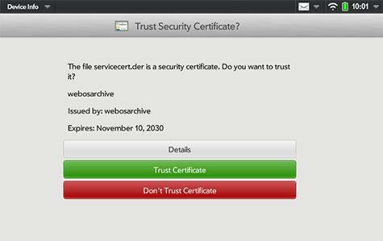

Proxy Setup
Most people no longer need this page. An SSL-bump proxy used to be the only way to get a webOS device onto the encrypted web. On webOS 2.2.4 and 3.0.5 — every TouchPad, and any Pre3, Veer or Pre 2 at 2.2.4 — the Modern TLS Updates do the job natively, and better. Start there.
A proxy is worth setting up in two remaining cases:
- You want the extras. The webOS Archive proxy does more than encryption: it redirects Google searches to DuckDuckGo Lite, quiets the bogus Hot Spot detection, and can host the original on-device Help content.
- You'd rather not patch the device. The TLS Updates modify system files. If you want your device left stock, a proxy is the hands-off alternative.
Note the awkward gap: the API to set a proxy wasn't added for most devices until webOS 2.2.4 (2.2.0 on Pre3) — so the older devices that can't run the TLS Updates mostly can't run a proxy either. On an original Pre or Pixi, neither option is available. If you're on a Pre 2 or Veer it IS possible to update them to webOS 2.2.4 with a Super Doctor — many are archived and ready to run, see Call the Doctor — and once you've done that, the TLS Updates are the easier finish.
Fair warning: SSL-bumping defeats the security of modern encryption, and shouldn't be used for anything highly private.
Important Note Make sure the time on your device is at least close to accurate. Certificates are based on dates, so if your internal clock is wrong, you will get errors!
Proxy Options
A few options are well tested, and work well on webOS 2.2.4 and higher. The choice is partially dictated by your device and home network environment.
Self-Hosted Proxy
webOS Archive provides a free, easily installed self-hosting Squid Proxy that handles all the encryption issues for you. You'll need a computer that's always on to act as the proxy server. Linux and macOS are supported easily, Windows is supported through WSL (Windows Subsystem for Linux). This option also provides the ability to host the original Help content, restoring the on-device Help system.
Grab the latest release on the webOS Archive GitHub and review the Readme to get started running the server.
On-Device Proxy
For Pre3 and TouchPad, you can run a proxy right on your device. Nizovn's Squid SSL Bump App can be installed adding the modernization feed to Preware:
Add the following feed in the Preware "Manage Feeds" menu option, then "Update Feeds":
http://stacks.webosarchive.org/feeds/modernize/ipkgs/
Search for Squid and install it, and its dependencies. Once installed, you'll need to generate and install the certificate.
WebOne Proxy
If the other two options are too complex for you, check out the WebOne proxy, which runs on Windows, Mac and Linux: WebOne on GitHub
Device Setup
Once you have a Proxy server running, you'll need to configure the device to use it. For most options, this involves two steps:
- Installing the proxy's certificate
- Configuring the proxy server
While the details will be slightly different, these steps are usually required.
Easy Install
If you're using webOS 2.2.4 or higher, The easiest way to get started is with the NEW webOS Archive Proxy app. To download, install an App Store and search for "Proxy".
Or use the direct download and install it yourself.
Manual Configuration
If Easy Install doesn't work for you, or you still get certificate prompts, you can do all the steps manually. Make sure you start from a clean slate by removing any existing certs shown in the Certificate Manager app, and deleting downloaded certs from /media/internal/.
Also, it never hurts to do a full reboot between clean-up and manual install.
Adding the Certificate
Your proxy server provides a certificate you must install in order to bypass certificate warnings from other websites: one certificate that covers the whole Internet!
- On your computer, download the cert:
http://<yourserverip>:3129/cert
- Plug your webOS device into your computer with a USB cable, and enter USB Disk mode on the device
- Copy the cert you downloaded onto root directory of the USB device
- Launch the built-in webOS app "Device Info"
- From the menu in the top left corner, choose "Certificate Manager..."
- Press the "+" button at the bottom of the screen
- Select the new cert
- When prompted, choose the green button to "Trust" the cert
- Reboot your webOS device

Configure the Proxy
A Proxy switch app adds a feature to webOS allowing you to turn on (and off) a global proxy. Once activated, this proxy works for any app on the device -- including email!
- Install a Proxy app
- Install the app webOS Archive Proxy app from App Museum II, or download directly here.
- Install the app Proxy Set Basic from Preware, or download directly here.
- Launch the app, and configure the fields as follows:
- Server:
<yourserverip> - Port:
3128 - Press the "Set" button at the bottom
With your proxy configured, you should be able to open almost any modern webpage. But even with connectivity established, you may find that some web pages don't work well on your device -- the web has evolved since webOS was first born!